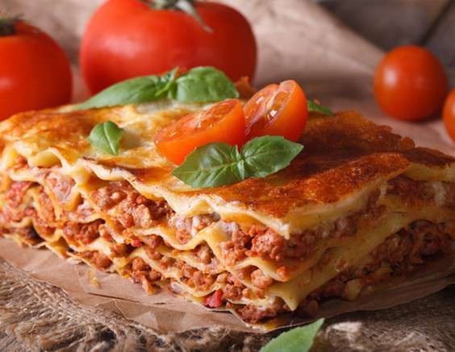

Лазанья
Описание
Аппетитная классическая лазанья с фаршем и помидорами - настоящий гастрономический праздник. При всей своей сочности, нежности и изысканности, это блюдо не требует для приготовления экзотических ингредиентов - в нём идеально сочетаются продукты, которые почти всегда есть под рукой у любой хозяйки.
Насыщенный томатный вкус со сливочным соусом бешамель покорит каждого. Приготовить лазанью с фаршем и помидорами пошагово по рецепту с фото не составляет труда даже начинающему кулинару. При подаче украсьте свежим базиликом.
Ингредиенты
- Свиной фарш-600 грамм
- Помидоры-3 шт
- Лук репчатый-2 шт
- Лист лазаньи-9 шт
- Сливочное масло-50 грамм
- Чеснок-3 зубчика
- Молоко-600 мл.
- Мука-5 ст.л.
- Cыр-50 грамм
- Орегано-1 ч.л.
- Coль-по вкусу
- Черный молотый перец-по вкусу
- Растительное масло-2 ст.л.
Шаги по приготовлению
- Для приготовления классической лазаньи с помидорами и фаршем нужно подготовить ингредиенты. Лук очистить и мелко нарезать. Фарш обжарить на растительном масле, добавить лук, орегано и тушить под крышкой 10 минут.
- Помидоры промыть и нарезать. С помощью блендера измельчить помидоры с чесноком до однородной массы. Отправить к фаршу, перемешать, тушить на среднем огне 10 минут.
- Приготовить соус бешамель. В глубокой сковороде растопить сливочное масло, добавить муку и, интенсивно помешивая, влить частями горячее молоко, приправить солью, затем довести до кипения и выключить.
- В форму для запекания вылить половину соуса бешамель, на дно формы выложить листы лазаньи, сверху распределить фарш, затем выложить еще листы лазаньи и повторить шаг.
- Верхний слой листа лазаньи полить соусом бешамель и посыпать тертым сыром. Запекать лазанью в духовом шкафу 40 минут при 180 градусах до образования золотистой корочки.